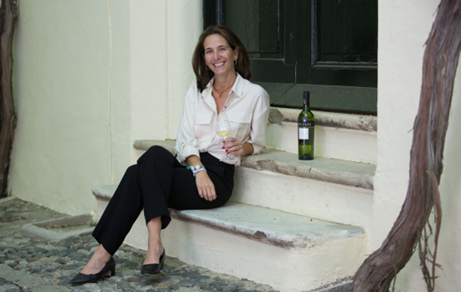

CSO de González Byass
Una conversación sobre sostenibilidad real: prioridades estratégicas, retos del sector y cómo se construye impacto desde dentro de la organización.
En este número del Radar de Sostenibilidad comenzamos la tarea de acercaros a todos los integrantes del equipo para que podáis conocerlos mejor.
En esta primera entrevista, tenemos el placer de contar con Victoria González-Gordon, CSO de González Byass desde hace 4 años.
Victoria: Con gusto, Javier. Me encanta sumarme a esta iniciativa y estoy deseando conocer a mis colegas en el resto de los socios.
Victoria: Me encanta pasar tiempo con mis 4 hijos y también con mis amigos, alrededor de una buena mesa, con una copa de vino y una sobremesa larga. Me gusta mucho viajar y, en el día a día, pasear, leer y cuidar el jardín. ¡Pequeños placeres de la vida!
Victoria: Trabajaba en el departamento de exportación como responsable de marketing, y veíamos que la sostenibilidad estaba muy avanzada en otros países. Nosotros teníamos un plan de sostenibilidad y llevábamos a cabo muchas iniciativas, pero faltaba una figura que coordinara e impulsara todo con una visión global. Yo ya formaba parte del Green Team (equipo interno que lidera las decisiones de sostenibilidad en González Byass) y era un tema que me encantaba. Me ofrecieron el puesto y aquí estoy.
Victoria: Antes de entrar en González Byass estuve unos años trabajando en una agencia de marketing, donde aprendí mucho de distintos sectores. Pero cuando tuve la oportunidad, tras un proceso de selección, de incorporarme a González Byass como International Marketing Manager, no lo dudé. Fueron unos 15 años intensos, con muchos viajes y mucho contacto con personas de diferentes mercados; unos años muy enriquecedores. Fue además un periodo de expansión de la compañía, donde impulsamos grandes proyectos como la 'sherry revolution', el crecimiento internacional de Beronia o la incorporación de nuevas bodegas a la familia.
Victoria: Proteger y potenciar la biodiversidad en el viñedo, la descarbonización del Alcance 3 y el uso eficiente del agua. En el ámbito social, además del cuidado de los empleados (área que gestiona RRHH), seguir colaborando de manera estrecha con las comunidades locales para generar un impacto real, así como la colaboración con proveedores alineados con nuestros objetivos de sostenibilidad.
Victoria: ¡Al 100%, espero!
Victoria: Nuestro plan de sostenibilidad finaliza en agosto de 2026, y estamos en el proceso de revisar prioridades y establecer nuevos objetivos. Un punto clave será continuar desarrollando alianzas con los proveedores.
Victoria: Como tenemos obligación de reportar Estados de Información No Financiera (EINF) desde hace ya años, contamos con una plataforma donde recogemos los indicadores y avances. Medimos la huella de carbono, el uso de energía, el uso de agua y la gestión de residuos, entre otros. Algunos objetivos son: la reducción de emisiones en un 55% (año base 2019), alcanzar un 40% de energía renovable y un 15% autogenerada (ambos ya alcanzados); aligerar nuestro packaging, llegar al 75% de viñedos con gestión sostenible y añadir al menos 2 viñedos al año a nuestro programa 'Ángel de Viñas', dedicado a la conservación de viñedos viejos. También tenemos KPIs a nivel social y de equipos, como la colaboración con organizaciones locales en cada bodega o dedicar horas de formación al equipo.
Victoria: Estamos a la espera de cómo se traspone la CSRD en España, y seguimos las novedades regulatorias de cerca, pues es fundamental estar preparados para los cambios que puedan afectarnos. Vemos que nuestros clientes, sobre todo en Europa, nos reclaman mucha información de sostenibilidad (ahora de manera más organizada que hace unos años) y existen riesgos comerciales si no avanzas. Para estar al día, contamos con asociaciones sectoriales, como Calidalia y la Federación Española del Vino, que hacen una gran labor de información en este sentido.
Victoria: Creo que vamos por buen camino para alcanzar los objetivos marcados en el plan, aunque hay retos. Un cambio importante debe venir del transporte (especialmente para una compañía con un importante foco en la exportación). Y como dices, para avanzar hace falta, en muchos casos, invertir. Por ejemplo, para descarbonizar y utilizar energías limpias es necesaria una inversión importante detrás; para utilizar sistemas de riego más eficientes también. Vamos avanzando a buen ritmo, pero obviamente marcados por la capacidad de inversión.
Victoria: Participamos en muchos programas de I+D+i, actualmente más de 20, de los cuales el 75% están relacionados con la sostenibilidad. Desde captura y transformación de CO2, hasta inteligencia artificial en el viñedo, resiliencia de la viña, viticultura regenerativa o la adaptación de variedades. Estos proyectos se estudian a pequeña escala y, en función de los resultados, se escalarán. El trabajo colaborativo es fundamental; si no, muchos no podrían llevarse a cabo.
Victoria: Creo que los clientes continuarán con sus avances en sostenibilidad y, al ser nosotros parte en su cadena de valor, nos seguirán involucrando en el proceso. Es cierto que con la ley Ómnibus se ha relajado algo la presión, pero, cuando llegas a ese punto en que la sostenibilidad se convierte no solo en un coste, sino en una ventaja competitiva, sigues avanzando según tus planes. Habrá que ver cómo queda España a nivel normativo. En cuanto a los consumidores, la sostenibilidad está cada vez más interiorizada, y creo que la ven como una responsabilidad de las marcas. Es decir, entienden como nuestra obligación el ser sostenibles a todos los niveles; no pagarán más si lo eres, pero quizás no te elijan si no lo eres.
Victoria: Creo que podríamos tener sinergias en temas de sostenibilidad de proveedores, y también en proyectos de I+D+i. ¡Hay tanto por hacer!
Victoria: El cuidado de la tierra me parece fundamental para obtener una materia prima de calidad. Ahora hay mucho movimiento acerca de la agricultura regenerativa, por ejemplo. Esto ayuda a dar valor a lo que hacemos. Siendo además una empresa familiar, esto es aún más importante.
Victoria: Hay que poner en una balanza el ser los pioneros en algo frente al coste que suponga. En algunos casos, es mejor esperar a que la innovación esté implementada antes de incorporarla. Nosotros llevamos la innovación en el ADN, pero es cierto que supone inversión (no solo económica, sino en recursos), por lo que es imposible llegar a todo; hay que seleccionar bien dónde queremos estar.
Victoria: ¡Para mejorar hay que medir! Es fundamental para tomar decisiones.
Victoria: Somos una compañía formada por distintas bodegas, con algunos departamentos centralizados y otros que dependen directamente de cada bodega. Para mí, trabajar en equipo es fundamental, y que todos sepan hacia dónde nos dirigimos también. Tenemos dos grupos de trabajo (que llamamos 'Green Team'): uno a nivel de departamentos (donde están Compras, Finanzas, Marketing, Producción…) y otro donde están todas las bodegas. Cada equipo se reúne de manera bimensual y tiene funciones distintas.
Victoria: Trabajamos mucho la comunicación interna para esto. Cartelería específica, acciones en equipo, premios a la sostenibilidad, formación a todas las nuevas incorporaciones… es necesario continuar realizando mucha comunicación interna para que la sostenibilidad se integre de verdad en la cultura corporativa.
Victoria: Nosotros dependemos de la tierra, y aquí vemos claramente los efectos del cambio climático. Hay que adaptarse, pero no es fácil: nuestros viñedos y bodegas están ligados a su región, delimitados por Denominaciones de Origen. En muchos casos no es viable plantar en zonas más altas o más frescas, y hay que buscar otras soluciones para sombrear la planta, hacer el viñedo más resiliente… pero, a largo plazo, es un riesgo que afecta a todo el sector.
Victoria: Medimos muchos KPIs diferentes en todas las áreas de trabajo de sostenibilidad. Me parece muy útil, sobre todo a nivel interno, ver tanto valores absolutos como valores relativos (lo que para nosotros significa sobre litro embotellado o sobre producción). En muchos indicadores, el valor absoluto no te permite ver mejoras, por lo que ver el dato en valor relativo aporta mucho valor.
Victoria: Llevamos algunos años haciendo un cuestionario de sostenibilidad a los proveedores de manera anual. Les pedimos que nos compartan sus avances y también ofrecemos echar una mano en los casos en que lo necesiten.
Victoria: Hacer cambios es difícil y costoso. Para nosotros, un reto es aligerar el vidrio de nuestras botellas, pues es un factor muy relevante en nuestra huella de carbono. Pero esto, en muchos casos, implica cambios en la línea de embotellado, moldes nuevos, cambios en cajas y paletización… son muchos departamentos implicados y muchos detalles. Y luego trasladar los cambios al mercado, manejar stocks, informar al cliente… es decir, lo que puede parecer una decisión fácil, en muchos casos no lo es tanto.
Victoria: Cuando llegué me encontré un proyecto consolidado y, sobre todo, un proyecto en el que la compañía cree. Esto es básico y cambia totalmente la perspectiva: el hacer las cosas simplemente por cumplimiento normativo, o hacerlas porque crees en ellas. Respondiendo a tu pregunta, me aseguraría de que la compañía cree en el proyecto, que no sea solo cumplir o quedar bien.
Victoria: No me gusta la politización que se hace de la sostenibilidad. Creo más en la línea del Papa Francisco, que hablaba del cuidado de 'la casa común'. El mundo nos lleva a ir tan rápido, todo tan de usar y tirar, que perdemos esta conciencia de que hay otros que vendrán detrás y que tenemos una responsabilidad de cuidar la tierra. La sostenibilidad tiene un sesgo muy político que me encantaría que no existiera.
Victoria: Implementar cambios puede hacerse de varias maneras. Yo prefiero la 'brisa suave': hacer las cosas bien, poco a poco, sin grandes estridencias, pero con el foco claro y el equipo convencido.